Nyoze Quick Start — 書き始めから、作品の仕上げまで
Nyozeは、小説や文章を縦書きの見た目のままで書き、章や資料を整理しながら作品を仕上げられるMarkdownエディタです。本文は普通のテキストエディタのように入力し、ルビや見出し、文字装飾などはツールバーや右クリックメニューから付けられます。
このガイドでは、原稿の置き場所を決めるところから、作品を作り、章を書き、Bookとしてまとめ、読み返し、書き出すところまでを順に紹介します。
このガイドで使用する画像は、macOS版 Nyoze 0.4.0-beta.2 の日本語表示を基準にしています。
Nyozeの4つの考え方
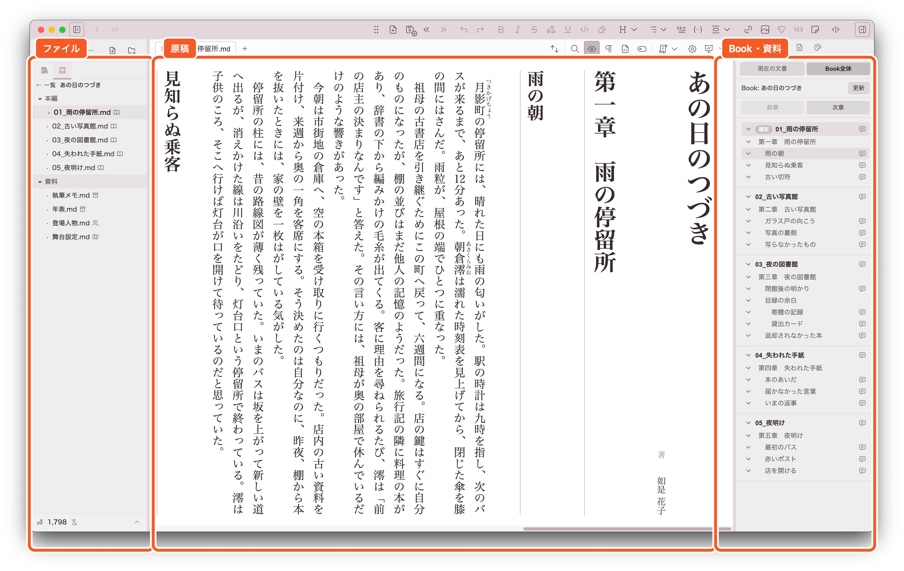
Nyozeでは、原稿や資料を次の4つの単位で扱います。
| 名前 | 役割 |
|---|---|
| 書庫（Library） | 複数の作品を置く親フォルダ。普段の執筆に使う原稿置き場です。 |
| 作品（Project） | 一つの作品の本文や資料をまとめるフォルダ。書庫の中に作ります。 |
| Book | 作品の中から、本として読む本文ファイルを読む順にまとめたもの。一つの作品に複数のBookを作ることもできます。 |
| 文書（Document） | 実際に文章を書く一つのファイル。章の原稿も、人物設定も文書です。 |
書庫は全ての作品をまとめるフォルダ、作品は一つの作品のための原稿と資料をまとめるフォルダ、Bookは作品フォルダ内の本文を読む順に並べた一冊分のまとまりと考えると分かりやすくなります。
作品に登録しなくても単独のMarkdownファイルを編集できますが、Book管理や付箋など、作品を前提とする機能を使う場合は作品として登録します。
画面の見方
Nyozeの画面は、大きく3つに分かれています。
- 左ペイン：書庫内のフォルダやファイル、作品を選びます。
- 中央ペイン：原稿を開いて編集します。複数の文書をタブで開けます。
- 右ペイン：Bookや資料の構成、アウトライン、付箋、文書情報、テーマなどを確認・設定します。
基本的には、左でファイルを選び、中央で書き、右で作品全体の構成や資料を確認する、という流れで使います。
1. 原稿の置き場所（書庫）を決める
まず、普段の原稿を置くための書庫を用意します。作品ごとに書庫を分ける必要はなく、一つの書庫の中に複数の作品用フォルダを作れます。
「ファイル」メニューから「書庫を管理」を開きます。新しく原稿の置き場所を作る場合は、「新しい書庫を作成」を選び、書庫名を入力して親フォルダを選択します。書庫名は「小説」など、自分で分かりやすい名前で構いません。
すでに原稿をまとめているフォルダがある場合は、「既存フォルダを書庫として登録」を使えます。複数の作品を置く親フォルダを選んでください。
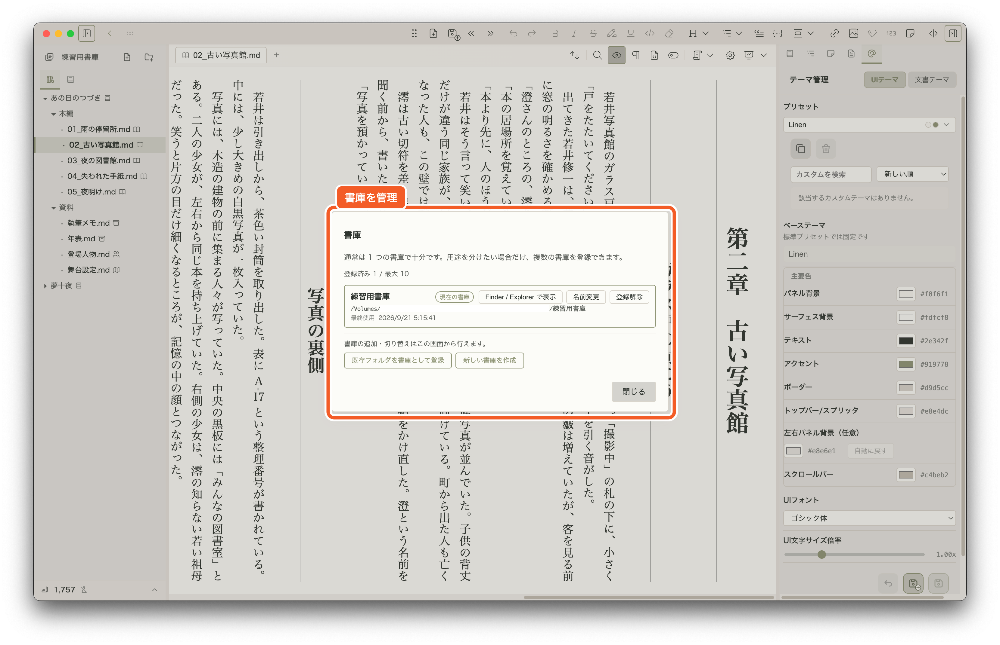
書庫を開くと、その中のフォルダや原稿を左側のファイル一覧から扱えます。
Nyozeでは、書庫を開き、その中のファイルを選んで編集するのが基本的な使い方です。
2. 作品と最初のBookを作る
次に、書庫の中へ自分の作品用フォルダを作ります。左側のファイル一覧の右クリックメニューから新しいフォルダを作成し、作品名や仮題を付けます。すでに作品用のフォルダがある場合は、そのフォルダを使えます。
- 作品用のフォルダを右クリックし、「このフォルダを作品にする」を選びます。
- 「作品名」と「最初のBook名」を入力します。一冊の小説なら、Book名を作品名と同じにしても構いません。
- 対象フォルダと名前を確認し、「作成」を押します。
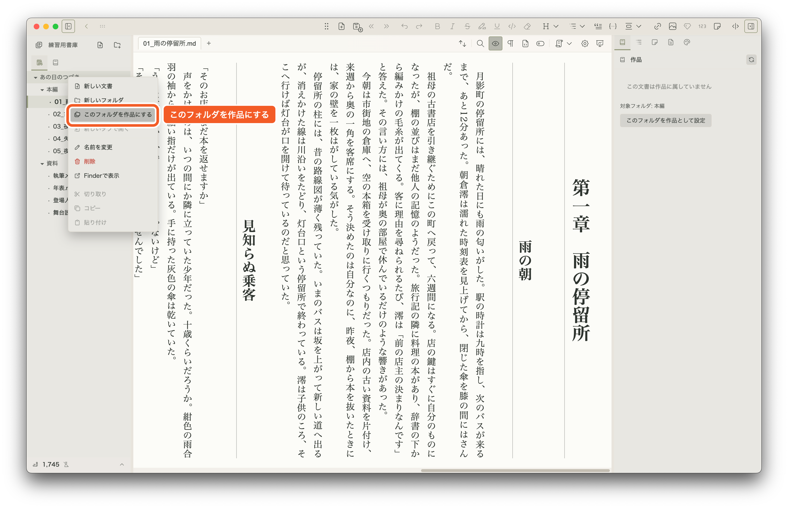
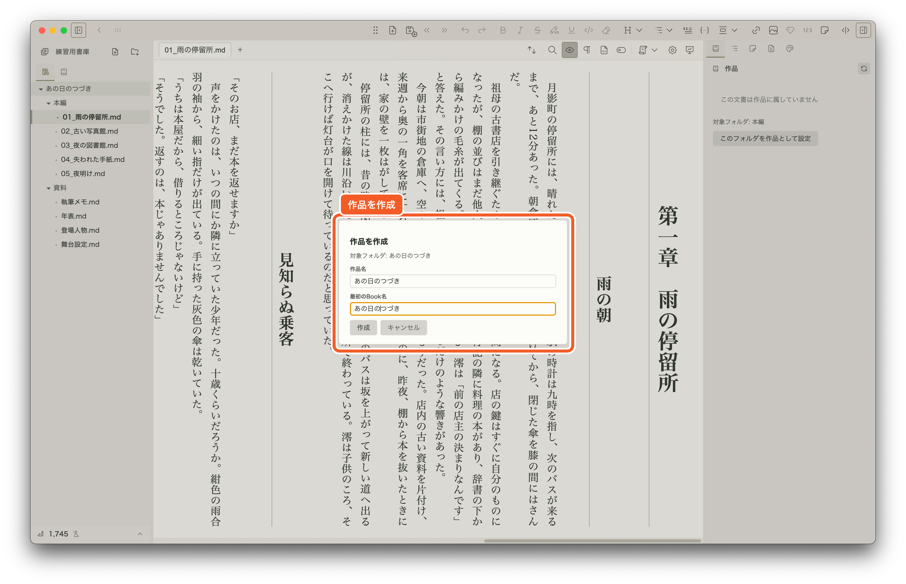
原稿と資料をまとめる作品と、最初の空のBookを一緒に作ります。
これで作品の入れ物ができました。本文のファイルや資料は、必要になったときに追加できます。最初から章数や構成を決めておく必要はありません。
原稿や資料が増えそうなら、作品フォルダの中に「本編」「資料」などのフォルダを作っておくと整理しやすくなります。フォルダ名や分け方は自由です。
3. 最初の原稿を書く
文書を作る
左側のファイル一覧で、原稿を保存するフォルダを右クリックし、新しい文書を作成します。たとえば「第一章.md」のような名前を付けます。短い作品なら、作品名をファイル名にして一つの文書にまとめても構いません。
作品フォルダ内で作成した文書は、右ペインの「作品」タブから、本文としてBookに登録したり、人物・設定などの資料として登録したりできます。
そのまま入力する
中央の原稿をクリックして、本文を書き始めます。縦書きの見た目のまま入力でき、原稿上部の切替ボタンから横書きにもできます。
見出し、文字装飾、ブロック単位の配置などは、上部のツールバーや右クリックメニューから設定できます。
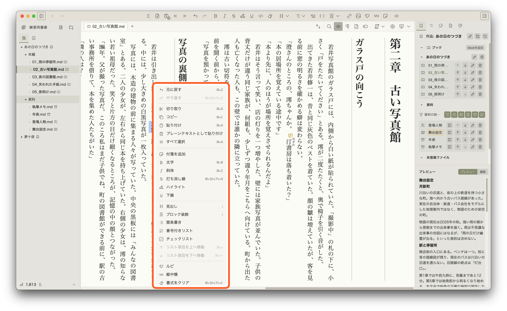
文字を選ぶと、右クリックメニューや上部のツールバーから、太字、ルビ、見出しなどを設定できます。
書いたら保存する
上部ツールバーの「保存」で原稿を保存します。Macでは Command＋S、Windowsでは Ctrl＋S も使えます。
4. 章をBookにまとめる
Bookは、一つの文書から使えます。本文として使うファイルをBookへ登録すると、複数の章ファイルを一冊の本として扱えるようになります。
左側の原稿ファイルを右クリックし、「Bookに追加」から追加先のBookを選びます。 右側の「作品」タブを開くと、Bookの中に登録した原稿が表示されます。
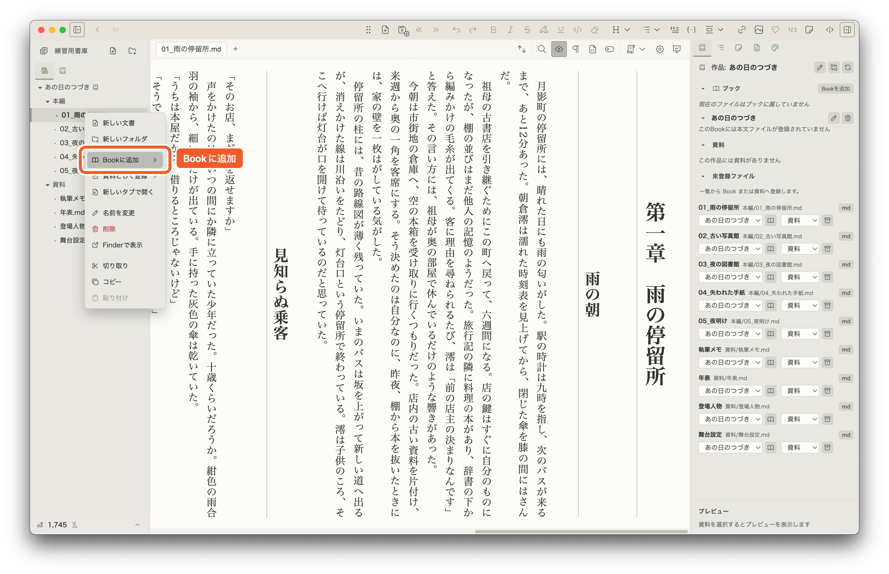
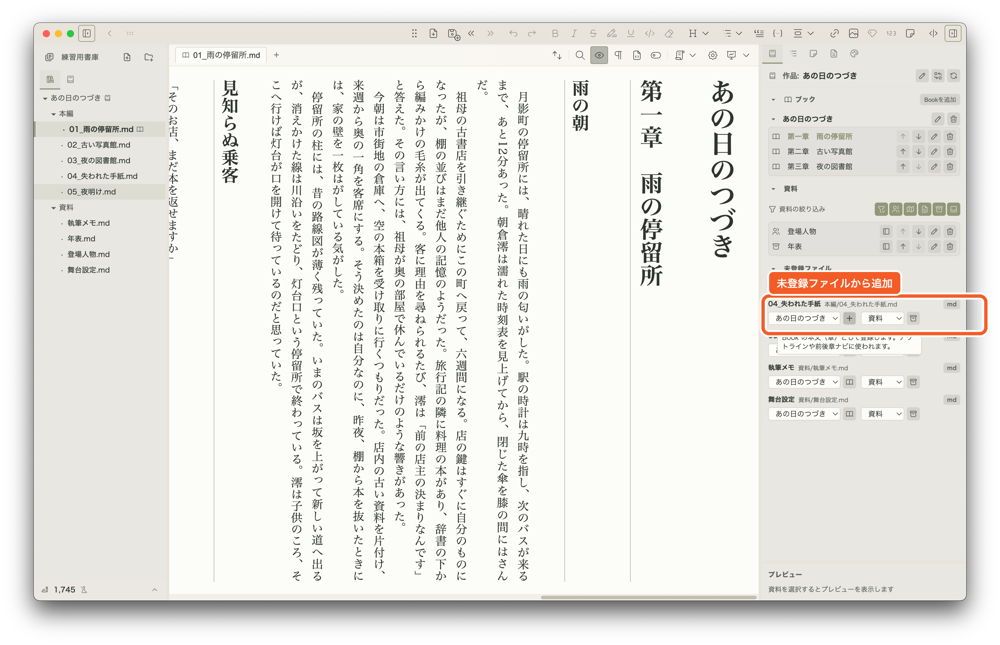
右ペインの未登録ファイル一覧からもBook/資料への登録ができます
続きを別の章に分けたいときは、新しい文書を作って同じBookへ追加します。一章ずつ書き進めても、先に章ファイルを用意しておいても構いません。
読む順番は右側のBook一覧で確認できます。順番を変えたい場合は、章の上下移動ボタンを使います。左側のファイル名順とBookの章順は別なので、章を入れ替えるためにファイル名を変更する必要はありません。
Bookから原稿を外す「登録解除」は、原稿ファイルそのものの削除とは別の操作です。本編から外しても、ファイルはそのまま残せます。
一つの作品に複数のBookを作ることもできます。たとえば「上巻」「下巻」や、「本編」「外伝」のように分けられます。
章の開始位置・終了位置では、隣接する章へ移動するためのナビゲーションが表示されます。章を分けていても、Bookとしてまとめておけば前後の章へ続けて移動できます。
オーバーレイボタンを押すか、MacではOption、WindowsではAltを押しながらマウスホイールを回すと、隣接する章ファイルへ移動できます。
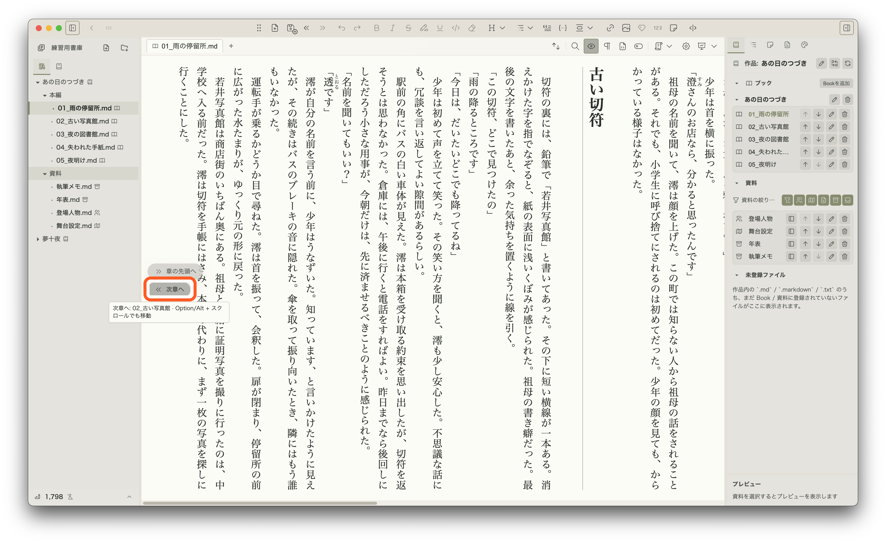
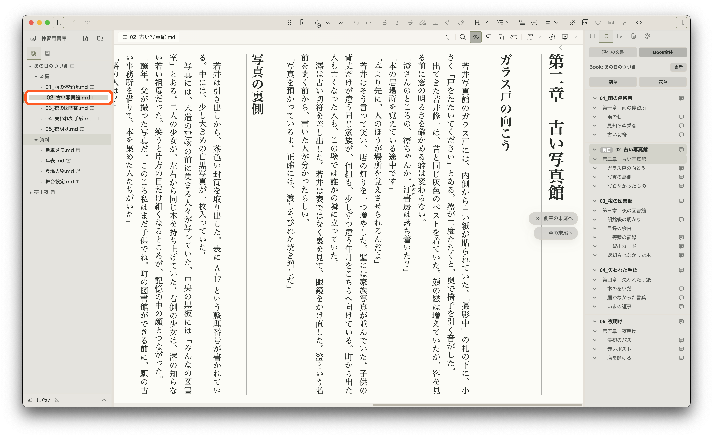
「次章へ」で「01_雨の停留所.md」から「02_古い写真館.md」へ移動した例です。
5. 見出しで構成を整え、書きたい場所へ移動する
原稿が長くなったら、章の中にも見出しを付けると、場面や節を探しやすくなります。
見出しにする行にカーソルを置き、ツールバーの見出しメニューからレベルを選びます。たとえば章題をH1、章の中の小見出しをH2にすると、大小の関係が分かる構成になります。
Bookに登録した原稿を中央に開き、右側の「アウトライン」→「Book全体」を選ぶと、章ファイルと、その中の見出しをまとめて確認できます。
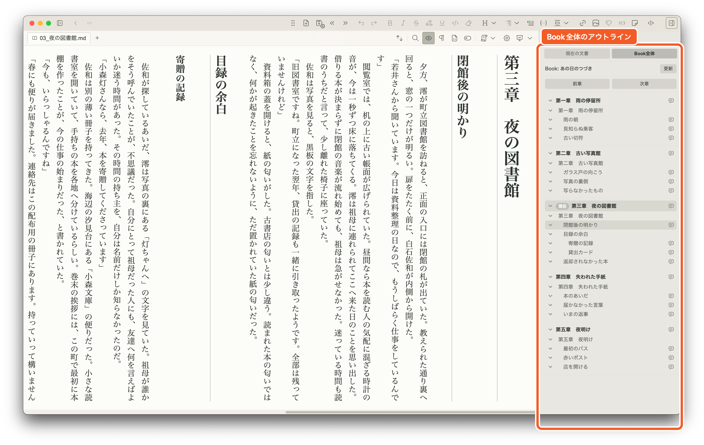
章をまたいで書きたい場所を探せます。
章や見出しを選ぶと、その原稿や該当箇所へ移動できます。今開いている原稿だけを確認したいときは、「現在の文書」に切り替えます。
本文中の見出しは折りたたんで表示することもできます。見出しの冒頭に表示されるボタンから開閉できます。
6. 資料を原稿の横で参照する
人物設定、舞台の情報、年表、推敲メモなどは、本文とは別の文書にしておけます。
資料ファイルを右クリックし、「資料として登録」を選びます。人物設定なら「人物」、舞台設定なら「設定」など、内容に合う種類を選びます。
原稿を書いている途中で資料を読みたいときは、右側の「作品」タブで資料名を選びます。中央の原稿を残したまま、右下に資料のプレビューが表示されます。
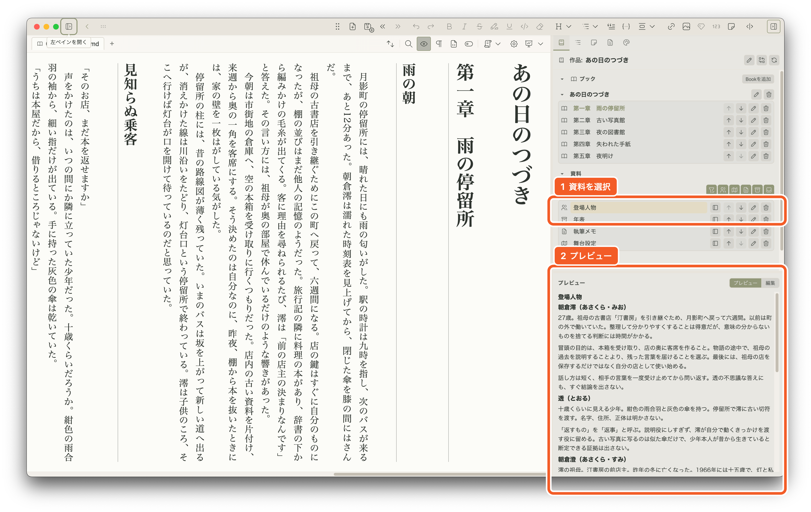
名前や設定を確認しながら、原稿の続きを書けます。
資料を大きく開いて編集したい場合は、「中央で開く」を使います。
7. 必要なところにルビや装飾を付ける
読みを伝えるルビ
ルビを付けたい文字を選択し、上部ツールバーの「ルビ」を押します。「ルビ」タブに読みを入力し、対象の文字を確認して確定します。
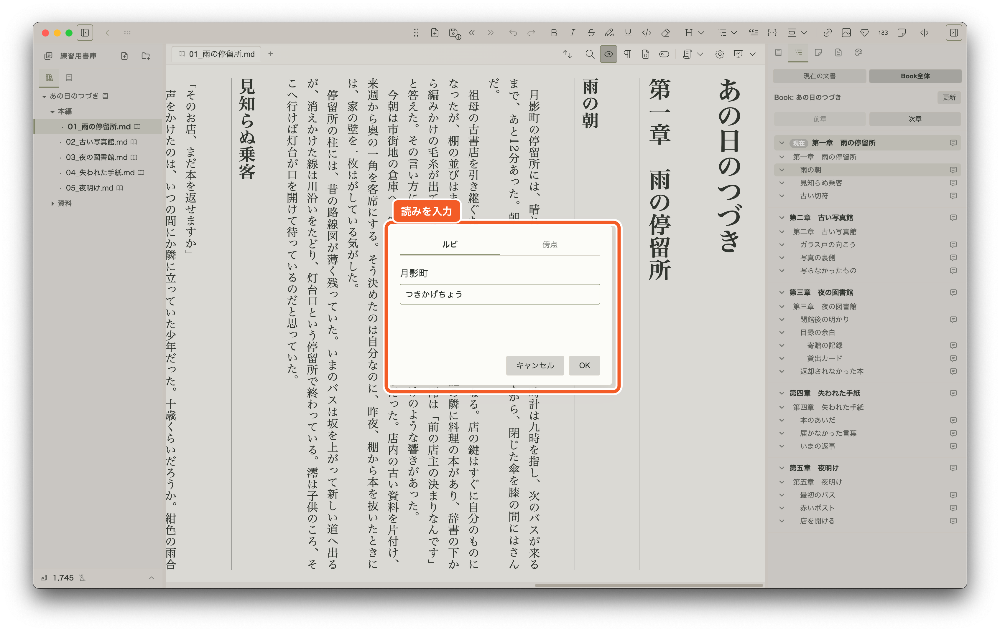
読みを付けたい文字を選び、読み仮名を入力します。記法を直接書く必要はありません。
目のアイコンの「ルビ表示」は、すでに付けたルビを表示するかどうかの切替です。
縦書きの中で数字を横に並べる
縦中横は、縦書きの行の中で短い数字などを横に並べる表示です。たとえば「12分」の数字を横並びにしたいときは、半角の「12」だけを選択して「縦中横」を押します。
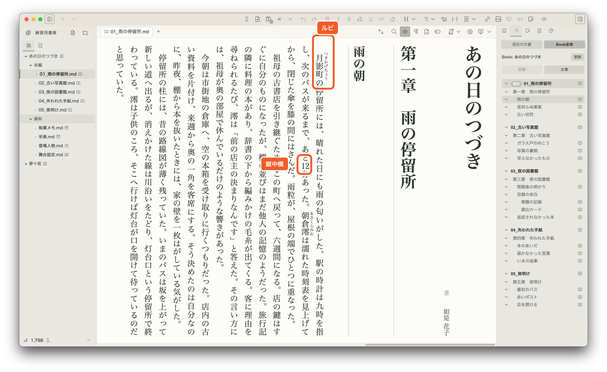
ルビや縦中横の見え方を、本文の中で確認できます。
傍点、字下げ、中央寄せ、地付き
言葉に傍点を付けたいときは、その文字を選択して「ルビ」のダイアログを開き、「傍点」タブで点の種類を選びます。
文章のまとまりを周囲の本文から下げたいときは、対象の段落を選び、「ブロック装飾」から字下げを選びます。そのほか、中央寄せや地付き（横書きでは右寄せ）など、段落の配置も選べます。
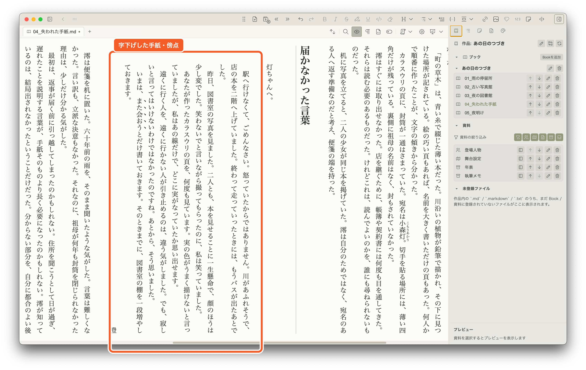
本文中の手紙を区別したり、言葉を強調したりできます。必要な箇所だけに使います。
8. 本のように読み返し、推敲する
書き進めた原稿は、Page Viewerで電子書籍のようにページ単位で読み返せます。章を通して読むと、場面のつながりや文章の調子を、執筆中とは違う視点で確認できます。
- 変更した原稿を保存し、読み返したいBookに登録されている本文を中央に開きます。
- 原稿上部の「ページビューア」の隣にある▼を押します。
- 「Book 全体をページビューアで開く」を選びます。
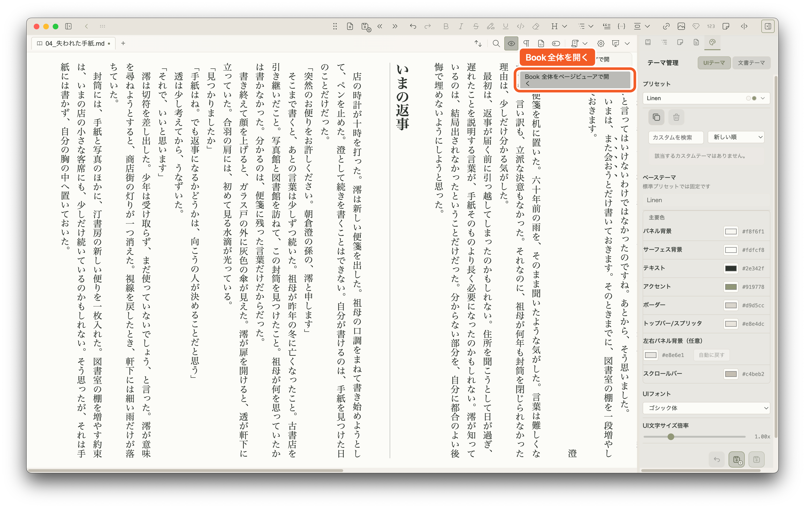
今の原稿だけを読むか、Book全体を通して読むかを選べます。
「Book全体」の項目が出ない場合は、Bookに登録した本文を中央に開いているか確認してください。
別ウィンドウにPage Viewerが開きます。途中の章へ移動したいときは「アウトラインを開く」から見出しを選べます。
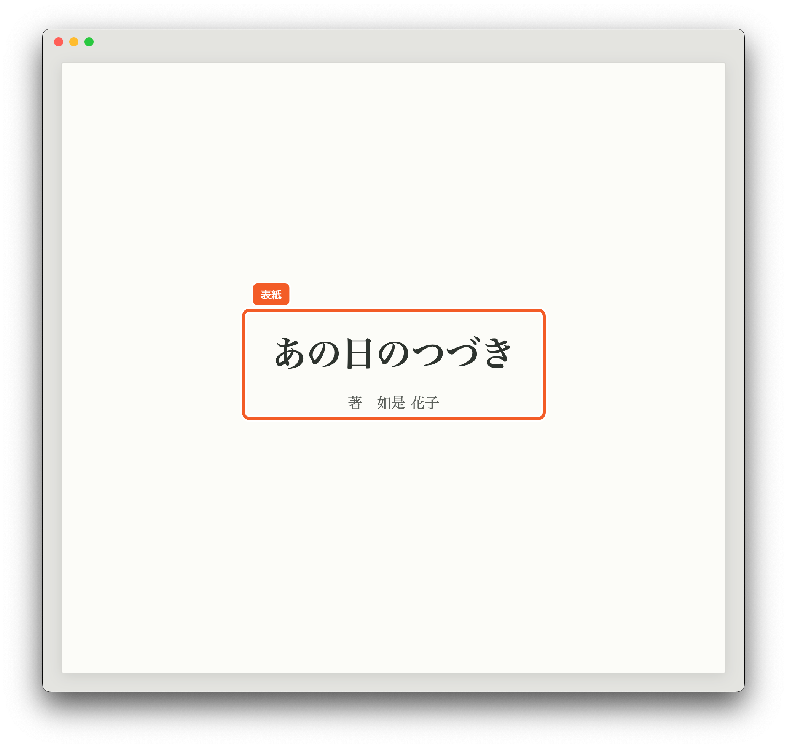
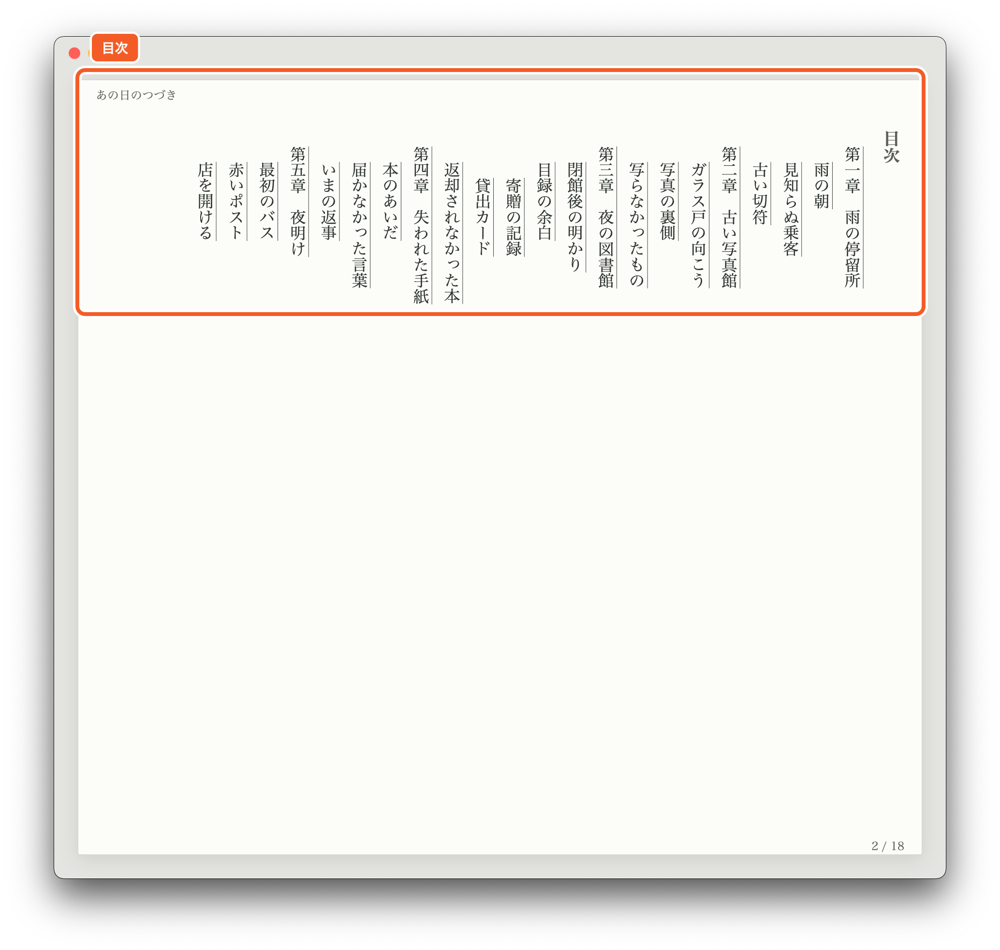
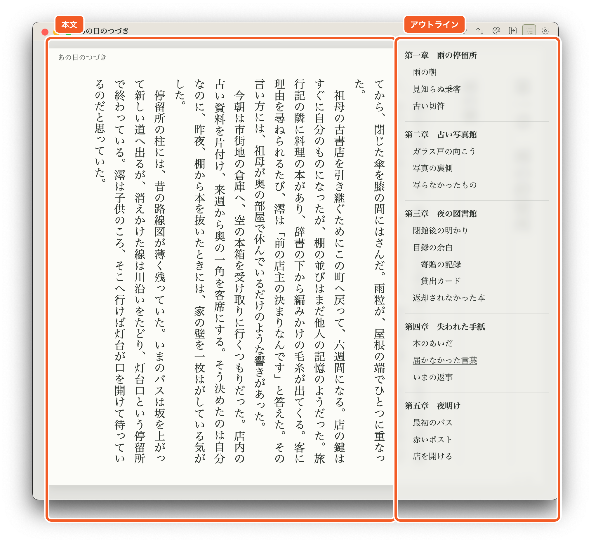
編集画面を離れ、読むことに集中して作品を見直せます。Page Viewerは閲覧用です。直したい箇所が見つかったら編集画面へ戻り、修正して保存します。
Book全体の表示には保存済みの原稿が使われるため、修正後は保存してから開き直してください。
9. 仕上げた作品を書き出す
Nyozeの外で作品を読むためのファイルが必要になったら、用途に合わせて書き出します。
Web Bookとして書き出す
Web Bookは、Nyozeのない環境でも作品を読みやすい形で閲覧できるHTMLファイルです。Web上で公開したり、ブラウザで読んだりする用途に使えます。
変更した原稿を保存し、対象のBookに登録した本文を中央に開きます。「ファイル」→「書き出し」→「Book 全体の Web Bookを作成…」を選びます。
「出力形式」を「単一 HTML」にし、必要に応じて目次、作品情報、章の境界の改ページなどを設定します。
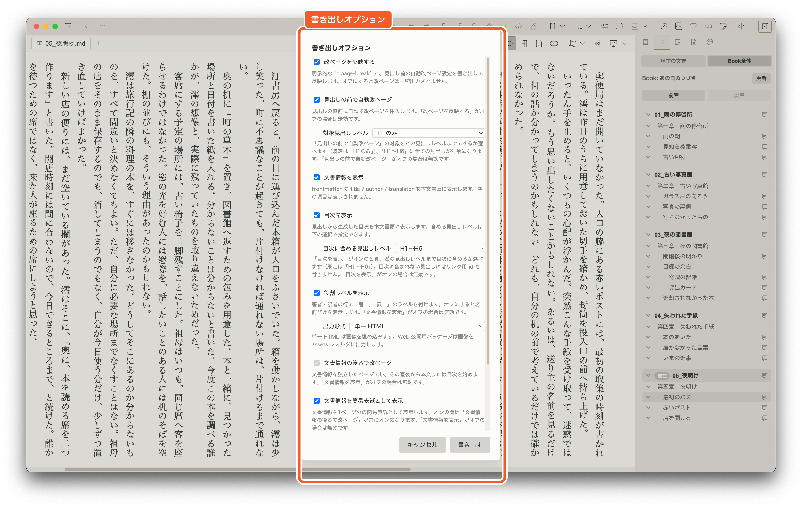
作品に合わせて表示内容を選び、閲覧用のファイルを書き出します。
「書き出す」を押し、元の原稿とは別の場所へ、作品名など分かりやすい名前で保存します。
書き出したHTMLはブラウザで開いて確認できます。ChromeまたはEdgeでは、ブラウザの印刷機能から印刷やPDFへの保存もできます。ただし、文字数や行数を厳密に指定する本格的な組版用PDF出力ではありません。
執筆や修正は元のMarkdown原稿で続け、必要になったらWeb Bookを書き出し直します。
EPUBを作る場合
現在のNyozeには、EPUBを直接生成する機能はありません。
LeMEやでんでんコンバータでEPUBを作る場合は、それぞれの外部ツール向けに書き出したMarkdownファイルを使います。Nyoze独自のルビ、縦中横、ブロック装飾などは、可能な範囲で出力先の表現へ変換されます。
書き出したファイルを、LeMEまたはでんでんコンバータ側で読み込み、EPUBを作成してください。
10. すでに書いた原稿をBookにまとめる
すでに章ごとに分かれたMarkdown原稿がある場合も、作品用フォルダを設定し、本文ファイルを同じBookへ登録して扱えます。本文を一つの大きなファイルに結合する必要はありません。
たとえば、夏目漱石『夢十夜』を第一夜から第十夜まで10個のMarkdownファイルに分けた場合、それぞれを同じBookへ登録することで、一冊の作品として扱えます。
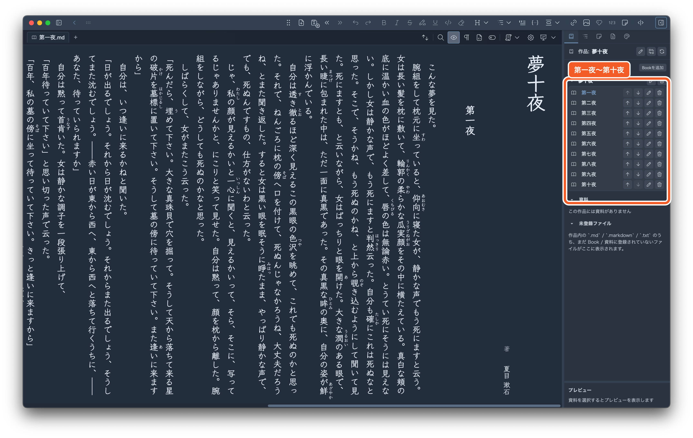
手元にある文書も、そのままBookの構成に使えます。読む順番はBookの一覧で確認します。
Bookにまとめると、各ファイルを別々に保ちながら、作品全体をPage Viewerで読み返せます。連作や短編集など、複数の文章を一冊にまとめたい場合にも使えます。
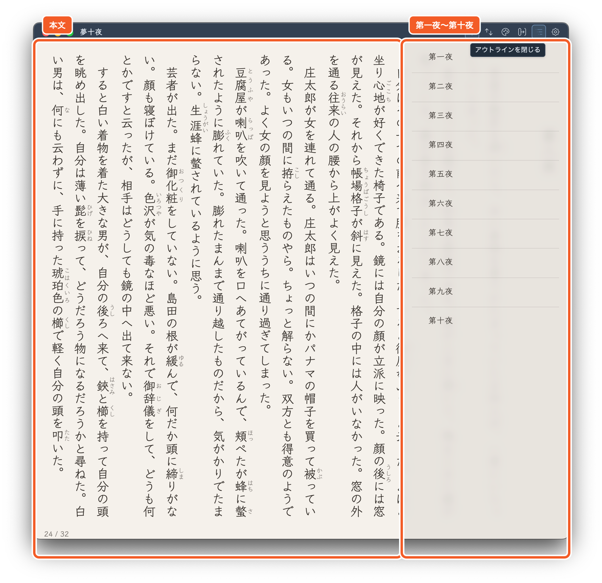
複数の文書を、一冊の作品として読み返した例です。
次に試してみる機能
このQuick Startでは、作品を書き始めてBookとしてまとめるための基本的な流れを紹介しました。
Nyozeには、このほかにも次のような機能があります。
- 付箋
- Typewriter Mode / Visual Focus
- Paragraph Plain / ソースモード
- 長文編集向けの実験的な機能
- リスト編集
- 見出しの折りたたみ
- 文書メタデータ
- 文書タイプの設定
- テーマの変更・カスタマイズ
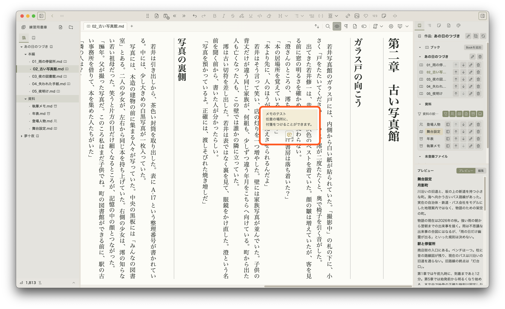
本文の好きな位置に付箋を付け、メモを確認できます。
すべてを最初から使う必要はありません。
まずは一つの原稿を書き始め、章が増えたらBookで順番を整え、必要になったら資料やアウトラインを使う。ひと区切り書けたらPage Viewerで読み返し、気になる箇所を直して保存する。
その流れから始めてみてください。